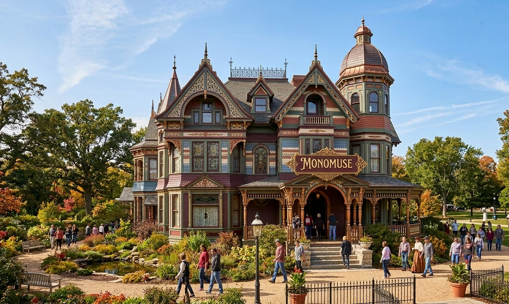

Explore

Our Mission
To preserve and exhibit the marvelous fruits of human ingenuity, fostering a sanctuary where the fine arts and the latest mechanical wonders converge to enlighten the curious soul.
Who?
This museum is for all ages! We have exhibits that appeal to everyone! To the right is a guide on how effectively visit the museum with kids.
Milestones
- 1893: Monosure Goods is founded by Ms. Marie Aspen Monosure orginally as a way to sell her orginal art works and clothing. As a 17-year-old, she operates this store out of her parents' Southern Virginian home
- 1904: Ms. Monosure creates enough revenue to begin building today's Monomuse
- 1910: Monosure Goods is officially done being constructed and is open to the public
- 1920: Monosure Goods transitions to display Ms. Monosure's work rather than selling it, alongside local artists
- 1921: Monosure Goods is renamed to be Monomuse
- 1928: Monomuse has its own feature in the Cosmopolitan Magazine as 'The southern place to be for everything art'
- 1929: Artists from all over the country begin to visit and display thier art in Monomuse
- 1956: Marie Aspen Monosure passes away and her 3 sons honor her legacy and continue to operate Monomuse to this day
- 2001: Monomuse wins the 'Best Historical Preservation' award for art museums
- 2010: Monomuse goes digital by deploying the very website you are on now!
- 2026: Redesign Loading. . .